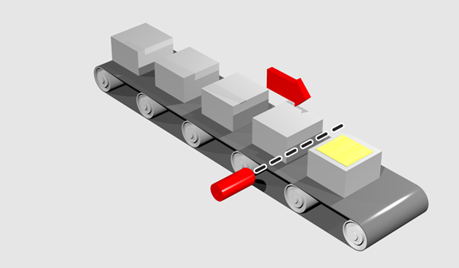

Axis Parameter
The OFFPOS parameter allows the axis position value to be offset by any amount without affecting the motion that is in progress. OFFPOS can therefore be used to effectively datum a system at full speed. Values loaded into the OFFPOS axis parameter are reset to 0 by the system software after the axis position is changed.
OFFPOS can be read to detect when a DEFPOS command has completed.
The distance to offset the current position
Change the current position by 125, using the command line terminal:
>>PRINT DPOS
300.0000
>>OFFPOS = 125
>>PRINT DPOS
425.0000
>>
Define the current demand position as zero:
OFFPOS = -DPOS 'This is equivalent to DEFPOS(0)
A conveyor is used to transport boxes onto which labels must be applied.

Using the REGIST function, we can capture the position at which the leading edge of the box is seen, then by using OFFPOS we can adjust the measured position of the axis to be zero at that point. Therefore, after the registration event has occurred, the measured position (seen in MPOS ) will actually reflect the absolute distance from the start of the box, the mechanism which applies the label can take advantage of the absolute position start mode of the MOVELINK or CAMBOX commands to apply the label.
BASE(conv)
REGIST(3)
WAIT UNTIL MARK
OFFPOS = -REG_POS 'Leading edge of box is now zero